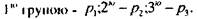
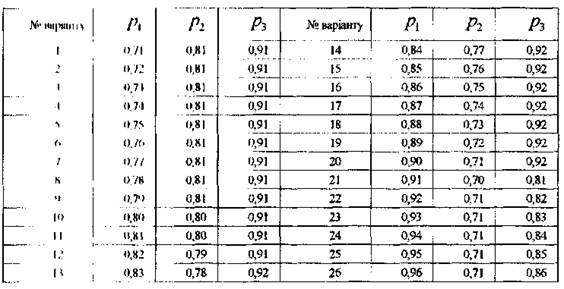

ЗАВДАННЯ ДЛЯ САМОСТІЙНОЇ РОБОТИ №1
В комп'ютерному центрі працюють три групи програмістів. Імовірність
викопаний плануЗнайти імовірність:
І) виконання плану всіма групами; 2) виконання плану тільки однією групою; 3) виконання плану тільки двома групами; 4) виконання плану хоча б однією групою.
